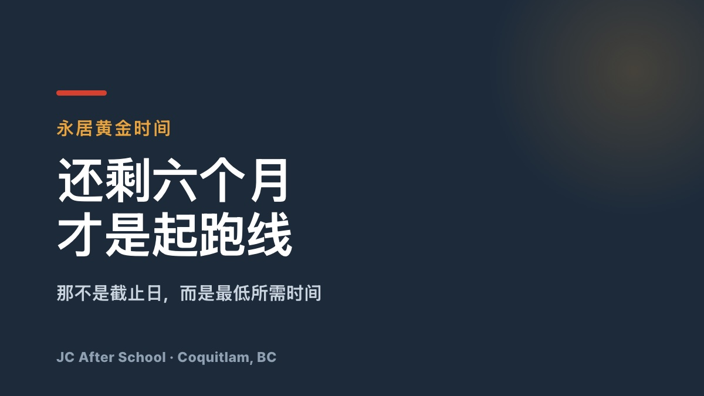

「签证还有六个月」— 其实已经开始晚了

「签证还有六个多月，应该没问题吧？」…… 很抱歉，其实已经开始晚了。
您是不是正持工签在加拿大工作，心里模糊地想着「老板总不会不给我续 LMIA 吧」？
这种期待还是放下比较好。等到期前两三个月才着急，雇主一句「抱歉，这次不行」就结束了。那时候连补救的时间都没有，只能去查回国机票。
能让您不中断职业生涯、也不必看雇主脸色留在加拿大的最后黄金时间，就是签证还剩六个月以上的现在。
🔥 还要继续求人到什么时候？
您不必一直低声下气地求一份对雇主来说又贵又慢的 LMIA。把这段对话反过来讲。
💬「老板，我去把法语考到 NCLC 5。您把整套 LMIA 流程全部跳过，只要付 230 加元。工作我照旧用英语做，和现在完全一样。」
在政府网站上点几下、付 230 加元，就能合法继续留住一位好员工 — 哪个雇主会拒绝？这就是法语流动性：它让您从「求人的一方」变成「提供方案的一方」。
🚀 如果 Express Entry 的分数让您绝望
英语成绩已经榨到极限，就是上不去
普通类别的 CRS 分数线越来越高，永居像是别人的事
雇主已经明说不再续 LMIA，未来一片不明
当所有人都在为英语的 0.5 分拼命时，法语人士专项抽签的分数线低得多。用英语工作，用法语拿永居 — 这才是更聪明的生存策略。
⏳ 时间正在走，而机会只有一次
如果您在只剩一两个月时才来找我们，坦白说我们也无能为力。考完法语再转换签证，最少需要六个月的实际时间。
我现在的签证时间真的够吗？
我的职业适用这条路线吗？
我连字母都还不熟，怎么在这段时间内考到 NCLC 5？
在您还在犹豫的时候，已经有人赶上了最后一班车。别再夜里睡不着地焦虑，先拿到一份具体的路线图。
📞 黄金时间咨询
📞 电话咨询：778-258-2223
💬 KakaoTalk：进入开放聊天
📍 地址：#130 – 1140 Austin Ave, Coquitlam, BC（JC After School）